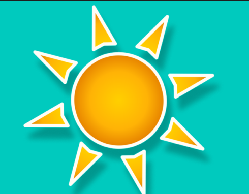

Recomendaciones luminosidad
Si la luminosidad es alta:
Mover la planta: Si es posible, mueve la planta a un lugar donde reciba menos luz directa del sol.
Si no es posible mover la planta, puedes protegerla con una sombra temporal, como una cortina o un toldo, para reducir la cantidad de luz que recibe directamente.
Si la luminosidad es baja:
Luz artificial: Si no es posible mover la planta a un lugar con más luz natural, puedes proporcionar luz artificial utilizando lámparas de crecimiento de plantas.